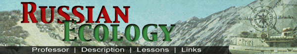

ru700

Read and Write Russian
1) Assignment
a. Download and install Russian fonts (1/2 hour)
You may already be able to read and write Russian on your computer and to understand web pages from Russia. The topic is, however, a bit complicated by the different types of computers (Windows or Mac based) and the different browsers (Internet Explorer or Netscape Communicator) and their own different versions and latest updates. Briefly stated you need to acquire and install Russian fonts and then configure or set your browser to recognize those fonts. The links below should get you started. Your first assignment is to follow the directions, set up your computer. Note-if this is a bit too complicated for you, seek some assistance from your computer support people!
To configure your computer to read and write Russian,
press here for Windows or here for Macintoshor Russian typing and keyboards
b. Locate and print a web page in Russian. You might choose something simple like www.msnbc.ru. Check out the sections on technology, business and health. (1/2 hour)
c. Identify one brief article (100-200 words) of relevance and translate it from Russian into English. (1 hr)
That's too hard!!! (If you find the above assignment c. too linguistically challenging try the following step-by step approach),
- Look at the headings for the different categories.
- Find twenty words that are similar in Russian and English.
- Find another ten words in Russian you do not understand and look them up in a Russian-English dictionary.
Hint: You can copy Russian or English words from any text and paste them into a Russian-English web dictionary
Using Search Engines
There are a number of search engines in English, www.yahoo.com, www.altavista.com, www.snap.com, www.go.com and those located at the home page of your browser. You can and should use them to expand your searches. For this lesson, however, we are concerned with learning how to use Russian search engines.
2). Assignment
Use www.rambler ru, www.yandex.ru and www.list.ru to make a list of ten Russian language sites dedicated to environmental issues. (1 hr). Follow each of the links and prepare an annotated list describing the content of the page, whether it contains links to other resources and a personal judgement as to its usefulness, according to the following model:
Title: Federal Organs of Power of the Russian FederationLink URL: http://www.gov.ru/main/ministry/isp-vlast47.htmlThis is the official website of the Ministries of the Russian Government. It contains links to several ministries and commissions, such as the Ministries of Agriculture, Energy, and the Committee or Bureau of Statistics. Some pages may require you to encode (select the proper Russian font) in order to read the pages.. Note that many ministries do not have links or separate home pages.
Hints:
- You can navigate through www.rambler.ru, www.yandex.ru or www.list.ru either by clicking on categories, such as "science"
- You can also type a word into the search box - such as the Russian word for "pollution."
- You might want to type the Russian word into your "notepad" then copy and paste into the search box.
- Try typing the English word into an English-Russian on-line dictionary. Then copy and paste the appropriate Russian word into the search box.
- If you see an interesting word in another Russian text, copy and paste it into the search engine..
Research Aids or Tools
Assignment (1/2 hour) We have already noted a few sources or resources for electronic assistance. If you have not tried them all, make their acquaintance now:
Dictionaries:
- English-Russian-Russian English
- Mini Dictionary of Environmental Terms
- Russian Glossary of Environmental Terms (windows machines only)
Grammars:
Russian Alphabet
- Alphabet in Signs
- Alphabet Stack (Macs only)
Search Engines
Summary
- Install fonts, configure browser (1 hour)
- Locate, print Russian web page and type a paragraph of Russian text.(1/2 hour)
- Translate article or prepare list of Russian-English words.(1 hour)
- Use search engine(s). Do annotated links.(1 hour)
- Familiarize oneself with research tools.(1/2 hour)
If you have been successful, we have accomplished several things. You are now able to access and read and print web pages in Russian. You have access to a Russian search engine. You are able to type Russian text into the search engine to locate relevant sites. Congratulations!